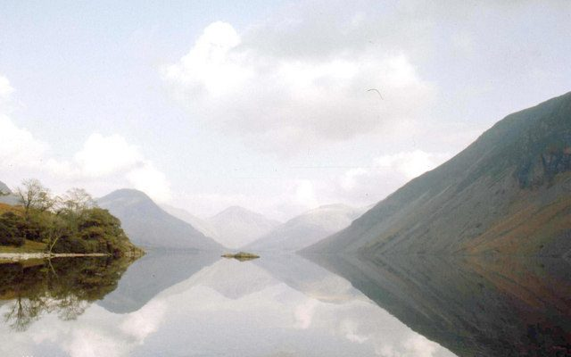
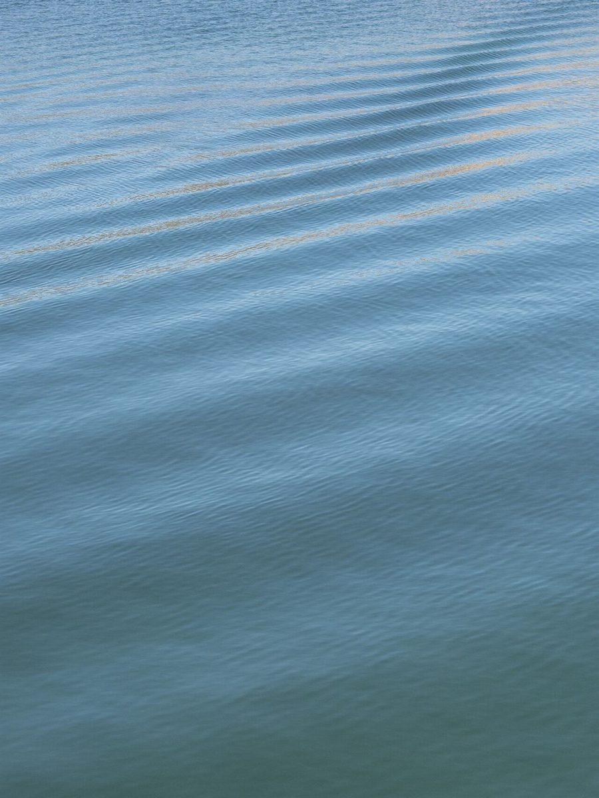

カフェ / 福井県越前市
cafe CALM
福井県越前市府中にあるカフェ「cafe CALM」のご案内ページです。営業時間やメニューなど、詳しいことは準備中。まずはInstagramをのぞいてみてください。

制作側の連想
風力階級の「0」から
屋号の意味や由来は分かりません。制作側は「CALM」という単語から、風の強さを0から順に並べるビューフォート風力階級を連想しました。この階級では、0番が「Calm(静穏)」にあたります。そこでこのサイトは、0番を起点に「Light air」「Light breeze」と数字を増やしていく読み物にしています。これは制作側の連想で、お店の理念・由来とは無関係です。お店が風や天気と関係しているかどうかも分かりません。
水面の目盛り
0から3まで、水面の見本
写真は越前市の風景ではありません。数字の並びは制作側の遊びで、実際の風の強さを測ったものではありません。国外のフリー素材です。
- 0Calm

国外のイメージ(イギリス(イングランド)) - 0Calm

国外のイメージ(ガーナ) - 1Light air

国外のイメージ(米国(Lake Mead)) - 2Light breeze

国外のイメージ(フィンランド) - 3Gentle breeze

国外のイメージ(オーストリア)
朝のもや
音の少ない時間帯を思い浮かべて


ご案内
確認できていること
| 所在地 | 福井県越前市府中2丁目3-2 |
|---|---|
| 電話 | なし |
| 営業時間 | 準備中 |
| 定休日 | 準備中 |
| ご予約 | 準備中 |
| 駐車場 | 準備中 |
| SNS | Instagram @cafe_calm_since2020 |